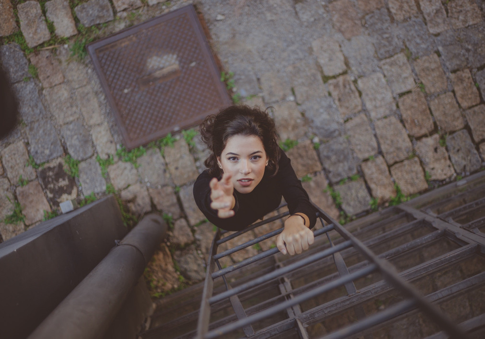
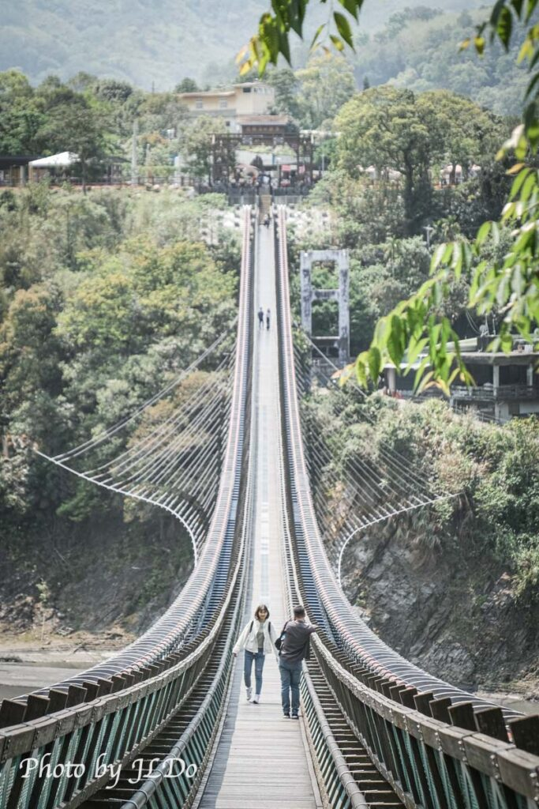
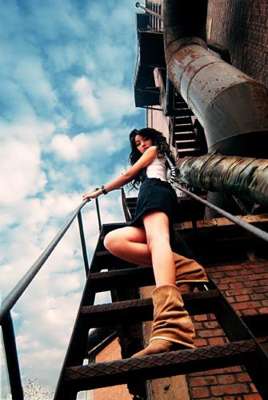

AI Website Generator对称构图能带来平衡与秩序，
让画面看起来稳定、庄重又有力量感。
当主体位于中心时，
能更突出主题、吸引观众目光。
常用于建筑、人像、静物摄影，
营造整齐与和谐的视觉效果。
Symmetrical composition creates a sense of balance and order,
making the image look stable, formal, and powerful.
When the subject is centered,
it draws the viewer’s attention directly.
Often used in architecture, portrait, and still-life photography
to create a clean and harmonious visual style.

顶视构图是从正上方俯拍的角度拍摄，
让画面呈现平面化效果，
能清楚展示物体的排列、形状与质感。
常用于美食、产品、桌面摆设或艺术创作中，
带来整洁、有设计感的视觉效果。
Top-view composition is shot from directly above the subject,
creating a flat, organized look.
It clearly shows the arrangement, shapes, and textures of objects.
Commonly used in food, product, flat lay, or artistic photography,
it gives a clean and stylish visual impression.

引导线构图利用线条的延伸方向，
将观众的视线引导至画面主体。
这些线条可以来自道路、建筑、河流或光影，
让画面更有深度、方向感与层次感。
Leading lines composition uses lines or paths
to lead the viewer’s eyes toward the main subject.
These lines can come from roads, buildings, rivers, or shadows,
creating a sense of depth, direction, and perspective in the image.

低角度构图是从下往上拍摄主体，
能让被摄物看起来更高大、威严、突出。
这种角度常用于建筑、人物或动物摄影，
营造出力量感与尊贵感的视觉效果。
Low-angle composition shoots the subject from below,
making it appear more powerful, tall, and dominant.
It’s often used in architecture, portrait, or animal photography,
to create a sense of strength and authority.
AI Website Generator